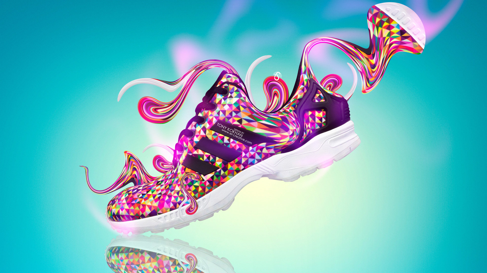

Zapatos de Material Sintético: Elegancia y Durabilidad
Los zapatos de material sintético son la elección perfecta para aquellos que buscan estilo y funcionalidad. Fabricados con polímeros de alta calidad, estos zapatos ofrecen una resistencia superior y una durabilidad excepcional. Con una variedad de texturas y colores disponibles, se adaptan a cualquier preferencia y ocasión.
Características:
Resistencia al agua: Ideales para días lluviosos o actividades acuáticas, manteniendo tus pies secos y cómodos.
Flexibilidad: Se ajustan a la forma de tu pie, proporcionando comodidad durante todo el día.
Fácil mantenimiento: A diferencia del cuero natural, los zapatos sintéticos son fáciles de limpiar y no requieren cuidados especiales.
Asequibilidad: Ofrecen una excelente relación calidad-precio, siendo una alternativa económica al cuero genuino. 
Todos los derechos reservados
© Rusbeli Ortega
Medellín-Colombia
2024